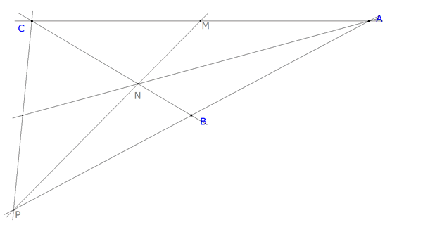

Para el aula. Problema 275 01. En un triángulo ABC, M es el punto medio del lado AC y N es el punto del lado BC tal que CN = 2BN. Si P es el punto de intersección de las rectas AB y MN, demuestra que la recta AN corta al segmento PC en su punto medio. X Olimpíada Matemática Rioplatense ( San Isidro, 12 de Diciembre de 2001)(Nivel I - Primer Día) Solución de José María Pedret, Ingeniero Naval. Esplugues de Llobregat (Barcelona). (2 de octubre de 2005) |
|
TRAZAMOS EL ENUNCIADO
 figura 1
Como CN=2NB, podemos tomar N como el baricentro de algún triángulo con un vértice en C y B como punto medio del lado opuesto a C.
Suponiendo que CA es un lado de ese triángulo y al ser M el punto medio de CA, MN será una mediana de dicho triángulo y como MN corta a AB en P, P será el tercer vértice. De aquí:
N es el baricentro del triángulo CAP
Entonces AN es la mediana por el vértice A y debe cortar a PC en su punto medio.
|